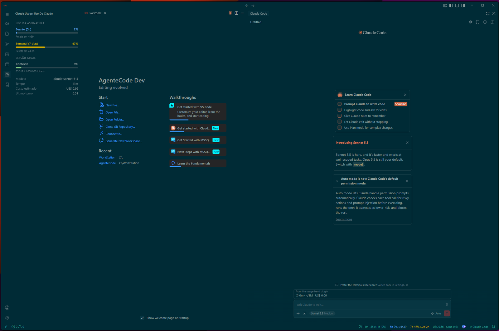

A IDE para agentes autônomos
Distribuição moderna do Code - OSS, com Claude Code integrado, interface sem bordas e pronta para o fluxo agêntico.
Windows 10 ou superior, 64 bits

O AgenteCode cobre o seu dia a dia
Tudo o que você precisa já vem configurado, sem pop-ups e sem ruído.
IA
Claude Code integrado na barra lateral direita, com atalho de abrir e recolher (Ctrl + L) e monitor de uso, contexto e custo na barra de status.
.NET e dados
- .NET Install Tool
- SQL Server (mssql)
Documentação
- Markhub com diagramas Mermaid
- Editor de Markdown rico
- Visualização lado a lado
Interface
- Seamless Canvas, sem bordas
- Activity Bar de 42 px
- 8 temas nativos
Ecossistema
- Extensões via Open VSX
- Base Code - OSS
- Código aberto sob licença MIT
Potencialize o seu fluxo
Poderoso
O agente de codificação conversa com o seu projeto direto do editor, para você delegar tarefas e revisar o resultado no mesmo lugar.
Rápido
Sem daemons em segundo plano e sem telas promocionais. A IDE abre rápido e fica fora do seu caminho.
Livre
Baseada em software aberto e conectada ao Open VSX, para instalar as extensões da comunidade sem depender de um marketplace proprietário.
Quatro paletas, duas versões
Escolha a variante normal, com painéis em tons distintos, ou a Clean, com uma superfície única e contínua.
Novidades
Nova identidade
Símbolo em loop infinito com os delimitadores < e >, em estilo flat, aplicado à IDE, ao instalador e a este site.
Saiba mais8 temas nativos
Everforest, Deep Teal, AgenteCode Eficaz e One Dark Pro, cada um em versão normal e Clean.
Ver temasCódigo aberto
Acompanhe o desenvolvimento, abra issues e contribua pelo repositório da organização.
Abrir no GitHubComece a programar com agentes
O instalador para Windows fica disponível na página de Releases do GitHub.
Baixar o AgenteCodeInstalando pela primeira vez?
- Baixe o instalador pelo botão acima e abra o arquivo.
- Se o Windows mostrar "O Windows protegeu o computador": clique em Mais informações e depois em Executar assim mesmo. Esse aviso é comum em programas novos que ainda não têm assinatura digital de editor, e não significa que o arquivo tenha algum problema.
- Siga o assistente de instalação. Ao final, abra o AgenteCode pelo Menu Iniciar.
Quer conferir a integridade do arquivo? (opcional)
Cada versão publicada traz um código de verificação, o hash SHA-256, na página da Release. Para conferir, abra o PowerShell na pasta do arquivo e rode:
Get-FileHash .\NOME-DO-INSTALADOR.exe -Algorithm SHA256
Compare o resultado com o código da Release. Se forem idênticos, o arquivo é o original, sem alterações.
Ou instale pela linha de comando
PowerShell: baixa o instalador da última Release, mostra o hash SHA-256 e abre o instalador.
$r = Invoke-RestMethod https://api.github.com/repos/agentecode/agentecode/releases/latest
$a = $r.assets | Where-Object { $_.name -like '*.exe' } | Select-Object -First 1
Invoke-WebRequest $a.browser_download_url -OutFile $a.name
Get-FileHash $a.name -Algorithm SHA256
Start-Process ".\$($a.name)"Debian e Ubuntu: baixa o pacote .deb da última Release, mostra o hash e instala.
url=$(curl -s https://api.github.com/repos/agentecode/agentecode/releases/latest | grep -o 'https://[^"]*\.deb' | head -n1)
curl -fLO "$url"
sha256sum "${url##*/}"
sudo apt install "./${url##*/}"